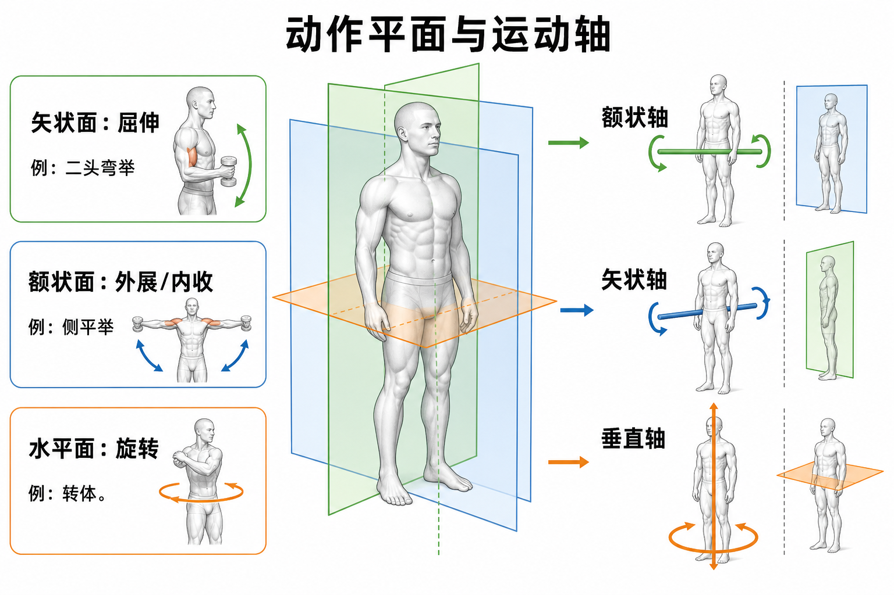

动作平面像三块透明玻璃，把身体切成不同方向；运动轴像穿过关节的转轴。每个动作平面都垂直对应一条运动轴，所以看懂平面和轴，就能快速判断弯举、侧平举、转体这类动作的本质。

矢状面像从头顶往下插入的一块前后方向玻璃，把身体切成左侧和右侧。身体部位在这块平面里向前或向后摆动，多数就是屈伸。
真实例子二头弯举时肘关节屈曲，深蹲时髋膝踝主要屈伸，硬拉时髋从屈曲回到伸展。这些都以矢状面为主。
训练含义固定器械和传统力量训练大量发生在矢状面，比如推蹬、卧推、弯举、腿屈伸。它们好学、好加载，但不能代表真实运动全部方向。
常见误解❌以为深蹲只练大腿前侧。✅其实深蹲是矢状面复合动作，髋、膝、踝同时屈伸，臀大肌、股四头肌、腘绳肌、竖脊肌都参与。
额状面像一面从左到右展开的玻璃，把身体切成前面和后面。肢体远离身体中线叫外展，回到中线叫内收。
真实例子哑铃侧平举是肩外展，髋外展机是髋外展，侧弓步有明显额状面控制，侧桥训练躯干抗侧屈能力。
训练含义很多人只练前后方向，忽略左右方向。结果跑步、变向、单腿落地时，髋外展肌和核心抗侧屈能力不够，膝盖容易内扣。
常见误解❌以为侧平举只看手臂抬高。✅其实重点是肩在额状面外展，肩胛还要配合上旋，否则容易耸肩或夹挤。
水平面像腰部高度的一张桌面，把身体分成上半和下半。身体在这个面里左右转，或手臂在胸前打开合拢，都属于水平面动作。
真实例子药球转体、绳索伐木、挥拍、挥拳、胸飞鸟的水平内收，都需要水平面能力。
训练含义真实运动很少完全不旋转。跑步有躯干反向摆动，投掷有髋到胸椎的旋转传力，防守变向需要控制水平面扭矩。
常见误解❌以为核心训练就是卷腹。✅核心很大一部分工作是控制旋转，尤其是抗旋转，比如 Pallof press。
门能开合，是因为门绕合页轴转。人体动作也一样：骨头在一个平面里运动，背后一定绕一条垂直于这个平面的轴旋转。
| 动作平面 | 垂直运动轴 | 典型动作 |
|---|---|---|
| 矢状面 | 额状轴 | 屈曲、伸展、二头弯举 |
| 额状面 | 矢状轴 | 外展、内收、侧平举 |
| 水平面 | 垂直轴 | 旋转、转体、挥拍 |
判断动作时先问“它主要在哪个平面移动”，再配对垂直轴。不要死背动作名，抓方向更稳。
肘屈伸、膝屈伸、髋屈伸、踝背屈跖屈，都主要在矢状面。二头弯举上举是肘屈曲，下放是肘伸展方向的控制。
训练含义增肌新手常从矢状面动作入门，因为轨迹清楚，负荷容易递增。但长期只练屈伸，会缺少侧向稳定和旋转控制。
常见误解❌以为“前后动”就是额状面。✅前后摆动通常发生在矢状面，因为平面命名看切面，不看你面朝哪里。
手臂从身体两侧抬起是肩外展，放回身体旁是肩内收。腿向侧方打开是髋外展，回到身体中线是髋内收。
训练含义臀中肌、臀小肌常在额状面里维持骨盆稳定。单腿站立、跑步落地、侧弓步里，额状面控制差会让骨盆下沉、膝内扣。
常见误解❌以为髋外展机只是“练侧臀线条”。✅它也对应步态、单腿稳定、膝关节对线。
脊柱旋转、髋内外旋、肩内外旋，多数围绕垂直轴或长轴发生。环转不是一个单独平面动作，而是屈伸、外展内收、旋转连续组合，看起来像画圆。
真实例子肩部绕圈、髋绕环、手臂大回环都属于多平面动作。肩关节灵活，所以能完成大范围环转；肘是铰链，就不能真正大幅环转。
训练含义热身里可以用肩环绕、髋环绕唤醒多方向控制；力量训练中则要把多平面动作和可控负荷结合，避免只追求“绕得大”。
常见误解❌以为绕圈越大越健康。✅如果绕圈靠代偿和疼痛范围完成，反而可能刺激关节。
一个完整下肢训练可以有深蹲或硬拉处理矢状面，侧弓步处理额状面，转体药球或抗旋转训练处理水平面。这样更接近日常和运动。
训练含义固定器械适合建立基础力量，但运动表现、伤病预防和体态控制需要多平面协同。尤其是球类、格斗、跑跳变向，水平面和额状面不能缺席。
常见误解❌以为功能性训练就是复杂动作。✅功能性训练先是“动作方向完整、控制清楚、负荷匹配”，不是把动作做花。
❌很多人以为平面和轴是同一个东西。✅平面是动作发生的方向，轴是动作绕着旋转的线，两者互相垂直。
❌很多人以为固定器械练得重就够全面。✅固定器械多偏矢状面，真实运动还要额状面稳定和水平面旋转控制。
❌很多人以为环转就是一个单独动作平面。✅环转是多平面连续组合，不是第四个解剖平面。
1. 二头弯举主要发生在哪个平面，绕哪条轴?
2. 哑铃侧平举主要属于?
3. 多选: 哪些配对正确?
4. 案例: 一个学员只练深蹲、硬拉、卧推、划船，力量进步很快，但打篮球变向时膝盖容易内扣。你会怎么分析?